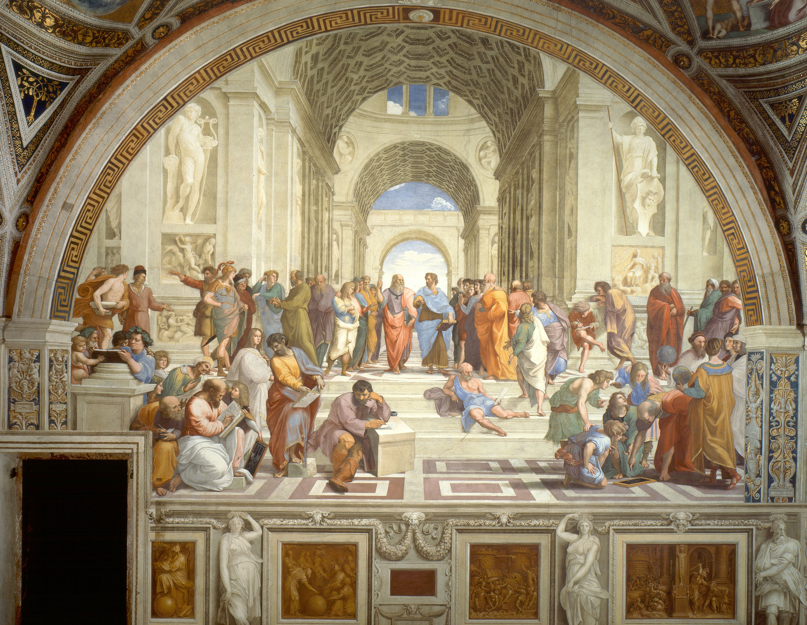
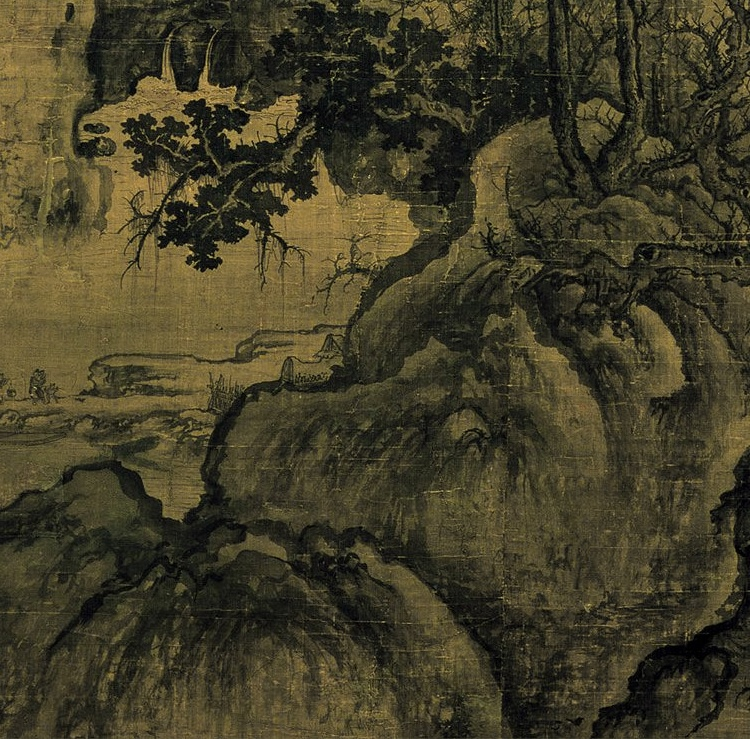
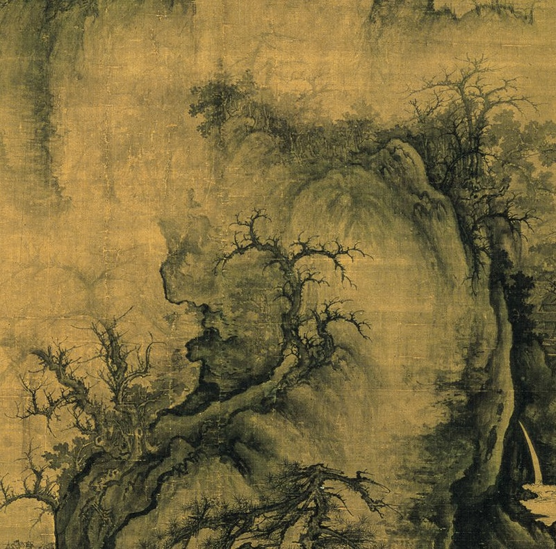
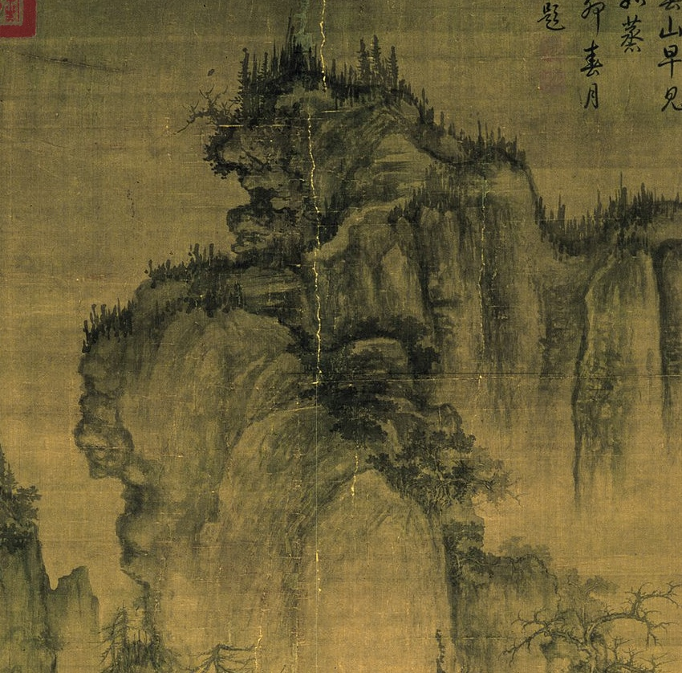

课程辩论 / 空间美学
从观看山水
到栖居山水
“身即”与“透视”的空间美学之辩
我方立场：身即
相较于透视，身即更能实现
空间审美的完整性。

1072 · 台北故宫 · [图1]
空间认知 · 作品对读 / 二辩
两幅作品：空间如何被组织？
《雅典学院》

拉斐尔 · 梵蒂冈 · [图2]
《早春图》
郭熙 · 台北故宫 · [图1]
固定视点的统一秩序 / 多方向的观看经验。
空间认知 · 局部分析 / 二辩
《早春图》：目光如何游历？



郭熙 · 台北故宫 · [图1] 全幅与局部
目光沿近景、溪谷、主峰移动，综合不同观看方向。
空间认知 · 尺度分析 / 二辩
《溪山行旅图》：身体与山川尺度

台北故宫 · [图3]
巍峨山体 / 微小行旅

人物为我们提供进入山川的身体尺度。
山体的高度↓身体感知的分量
尺度对比不仅关乎比例，也唤起行走其中的经验。
空间体验 · 长卷游观 / 二辩
《千里江山图》：空间随时间展开

观看时间01 ─────→ 02 ─────→ 03
王希孟 · 北宋 · 北京故宫 · [图4] 连续画段由右向左取景。
空间也在观看过程中逐渐展开。
空间意境 · 分论点三 / 三辩
空间意境：从视觉真实到精神联系
第三分论点
身即更能深化
人与空间的
精神联系
记忆 · 想象 · 情感
空间不仅具有视觉的真实，也具有情感与精神的意义。
空间意境 · 想象性栖居 / 三辩
郭熙：从可望到可游可居
可行
可望
可游
可居
由观看，转向游历与栖居的愿望。
“但可行可望不如可居可游之为得。”郭熙《林泉高致集·山水训》
山水不只值得观看，也可成为想象中的生命场所。
空间意境 · 山川神遇 / 三辩
石涛：山川与予神遇而迹化也

山川经验
→主体感受
→笔墨表达
引文据《苦瓜和尚画语录·山川章第八》；图解为讲稿思想的教学归纳。
画中山川承载人与自然相遇后的感知与理解。
全场总结 · 论点回收 / 四辩
回收：三个分论点，共同回应什么？
多维感知
观看方向与身体尺度
主动参与
展开长卷，形成观看经验
精神联系
记忆、想象与山川神遇
既有论据局部：《早春图》《千里江山图》《搜尽奇峰图》。
由空间认知，到空间体验，再到空间意境。
结辩 / 从观看到栖居
透视让空间
呈现在眼前，
而身即让生命
置身于山水之间。
谢谢大家
郭熙《早春图》局部 · 台北故宫 · [图1]